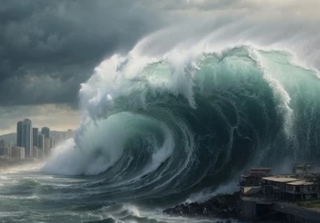
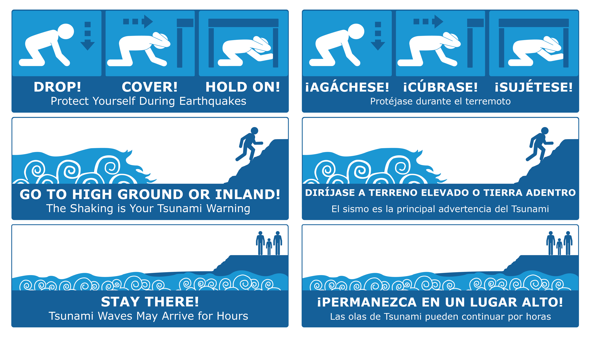
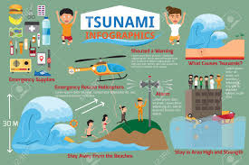

Understanding Tsunamis: Introduction, Symptoms, and Preventive Measures

Introduction to Tsunamis
What are Tsunamis? Tsunamis are large ocean waves caused by underwater earthquakes, volcanic eruptions, or landslides. These waves can travel across the ocean at high speeds and can cause significant damage when they reach coastal areas. Unlike regular waves, tsunamis have very long wavelengths and can flood large areas of land.
Symptoms of an Approaching Tsunami
Recognizing signs of an approaching tsunami can be crucial for timely evacuation:
- Unusual Ocean Behavior: A sudden and significant withdrawal of the ocean from the shore, exposing the seafloor.
- Earthquakes: Strong or prolonged shaking of the ground, particularly if it occurs near the coast.
- Rumbling Sounds: Low, rumbling sounds coming from the ocean, which can be heard before the waves arrive.
- Flood Alerts: Warnings or alerts from local authorities or weather services.
Preventive Measures During a Tsunami
To reduce the risk and impact of a tsunami, follow these preventive measures:
- Move to Higher Ground
- Follow Evacuation Orders
- Stay Informed
- Prepare an Emergency Kit
- Avoid Returning Too Soon

